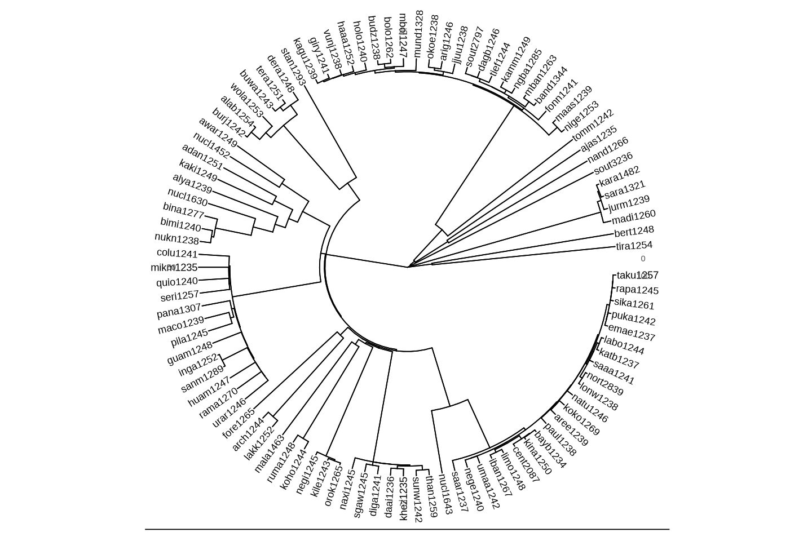
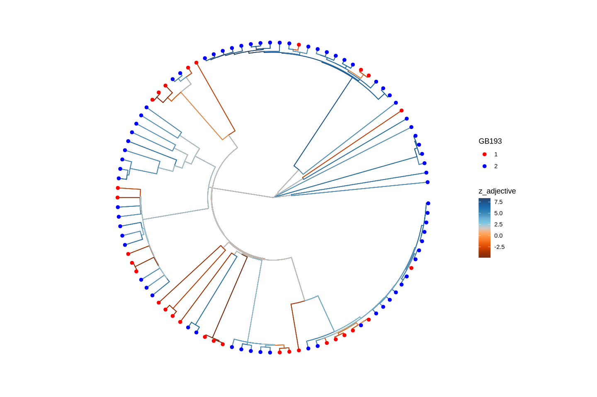
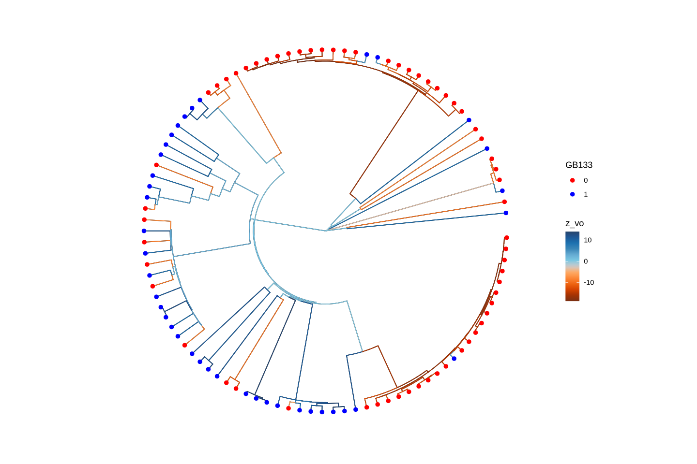

Running a Phylogenetic OU Regression with R and Stan
In this notebook, I will illustrate how one can set up a logistic regression with a phylogenetic random effect following an Ornstein-Uhlenbeck process using R and Stan.
This kind of analysis has conceptual advantages compared with alternatives - such as phylogenetic random effects following a Brownian motion, or correlated evolution using discrete characters and the CTMC model. However, while there are off-the-shelf solutions for the latter two, the OU regression is, to my knowledge, not yet implemented in a dedicated function or package. Such a model can be set up quite easily in Stan, however. This notebook serves to illustrate how this can be done.
Preparing the environment
The git repository contains a file OU_logistic_example.yml. You can use it to set up a conda environment containing all the required packages. (Of course you can also install the packages with install.packages if you don’t use conda.) At the command prompt, in the home directory of the repository, do
library(tidyverse)library(rstan)library(parallel)rstan_options(auto_write =TRUE)options(mc.cores = parallel::detectCores()) # Enable parallel Stan samplinglibrary(ape)library(R.utils)library(bridgesampling)library(loo)library(bayesplot)library(codetools)library(ggtree)library(posterior)library(tidybayes)library(ggthemes)library(paletteer)library(ggnewscale)options(repr.plot.width =12, repr.plot.height =8) # For base R plots in Jupytertheme_set(theme_minimal(base_size =24)) # Increase base font size
── Attaching core tidyverse packages ─────────────────────────────────────────────────────────────────────────────────────────────────────────────────────────────────────────────────────────── tidyverse 2.0.0 ──
✔dplyr 1.1.4 ✔readr 2.1.5
✔forcats 1.0.0 ✔stringr 1.5.1
✔ggplot2 3.5.2 ✔tibble 3.3.0
✔lubridate 1.9.4 ✔tidyr 1.3.1
✔purrr 1.0.4
── Conflicts ───────────────────────────────────────────────────────────────────────────────────────────────────────────────────────────────────────────────────────────────────────────── tidyverse_conflicts() ──
✖dplyr::filter() masks stats::filter()
✖dplyr::lag() masks stats::lag()
ℹ Use the conflicted package (<http://conflicted.r-lib.org/>) to force all conflicts to become errors
Loading required package: StanHeaders
rstan version 2.32.6 (Stan version 2.32.2)
For execution on a local, multicore CPU with excess RAM we recommend calling
options(mc.cores = parallel::detectCores()).
To avoid recompilation of unchanged Stan programs, we recommend calling
rstan_options(auto_write = TRUE)
For within-chain threading using `reduce_sum()` or `map_rect()` Stan functions,
change `threads_per_chain` option:
rstan_options(threads_per_chain = 1)
Attaching package: ‘rstan’
The following object is masked from ‘package:tidyr’:
extract
Attaching package: ‘ape’
The following object is masked from ‘package:dplyr’:
where
Loading required package: R.oo
Loading required package: R.methodsS3
R.methodsS3 v1.8.2 (2022-06-13 22:00:14 UTC) successfully loaded. See ?R.methodsS3 for help.
R.oo v1.27.1 (2025-05-02 21:00:05 UTC) successfully loaded. See ?R.oo for help.
Attaching package: ‘R.oo’
The following object is masked from ‘package:R.methodsS3’:
throw
The following objects are masked from ‘package:methods’:
getClasses, getMethods
The following objects are masked from ‘package:base’:
attach, detach, load, save
R.utils v2.13.0 (2025-02-24 21:20:02 UTC) successfully loaded. See ?R.utils for help.
Attaching package: ‘R.utils’
The following object is masked from ‘package:rstan’:
extract
The following object is masked from ‘package:tidyr’:
extract
The following object is masked from ‘package:utils’:
timestamp
The following objects are masked from ‘package:base’:
cat, commandArgs, getOption, isOpen, nullfile, parse, use, warnings
This is loo version 2.8.0
- Online documentation and vignettes at mc-stan.org/loo
- As of v2.0.0 loo defaults to 1 core but we recommend using as many as possible. Use the 'cores' argument or set options(mc.cores = NUM_CORES) for an entire session.
Attaching package: ‘loo’
The following object is masked from ‘package:rstan’:
loo
This is bayesplot version 1.12.0
- Online documentation and vignettes at mc-stan.org/bayesplot
- bayesplot theme set to bayesplot::theme_default()
* Does _not_ affect other ggplot2 plots
* See ?bayesplot_theme_set for details on theme setting
ggtree v3.14.0 Learn more at https://yulab-smu.top/contribution-tree-data/
Please cite:
Guangchuang Yu, Tommy Tsan-Yuk Lam, Huachen Zhu, Yi Guan. Two methods
for mapping and visualizing associated data on phylogeny using ggtree.
Molecular Biology and Evolution. 2018, 35(12):3041-3043.
doi:10.1093/molbev/msy194
Attaching package: ‘ggtree’
The following object is masked from ‘package:ape’:
rotate
The following object is masked from ‘package:tidyr’:
expand
This is posterior version 1.6.1
Attaching package: ‘posterior’
The following object is masked from ‘package:bayesplot’:
rhat
The following objects are masked from ‘package:rstan’:
ess_bulk, ess_tail
The following objects are masked from ‘package:stats’:
mad, sd, var
The following objects are masked from ‘package:base’:
%in%, match
Data
Now let’s get some data. I will use the EDGE tree (Bouckaert 2022).
# Create data directory if it doesn't existif (!dir.exists("../data")) dir.create("../data", recursive =TRUE)# Download the file if it doesn't existtree_gz <-"../data/global-language-tree-MCC-labelled.tree.gz"tree_file <-"../data/global-language-tree-MCC-labelled.tree"if (!file.exists(tree_file)) {download.file(url ="https://github.com/rbouckaert/global-language-tree-pipeline/releases/download/v1.0.0/global-language-tree-MCC-labelled.tree.gz",destfile = tree_gz,mode ="wb" ) R.utils::gunzip(tree_gz, destname = tree_file, overwrite =TRUE)# Remove the gzipped file after extractionif (file.exists(tree_gz)) file.remove(tree_gz)}edge_tree <-read.nexus(tree_file)edge_tree$tip.label <-sapply(strsplit(edge_tree$tip.label, "_"), `[`, 1)
It is advisable to rescale the tree so that the median branch length is 1.
I will look at the somewhat boring feature pair: - GB193: What is the order of adnominal property word and noun? - GB133: Is a pragmatically unmarked constituent order verb-final for transitive clauses?
Rows: 441663Columns: 9──Column specification───────────────────────────────────────────────────────────────────────────────────────────────────────────────────────────────────────────────────────────────────────────────────────────Delimiter: ","
chr (9): ID, Language_ID, Parameter_ID, Value, Code_ID, Comment, Source, Sou...
ℹ Use `spec()` to retrieve the full column specification for this data.
ℹ Specify the column types or set `show_col_types = FALSE` to quiet this message.
Now we filter out the datapoints for the two parameters of interest and the languages in the tree. I only consider two values per parameter, and only languages having a relevant value for both parameters.
Now we prune the tree to only include the languages in the data.
pruned_tree <-drop.tip(edge_tree, setdiff(edge_tree$tip.label, d$Language_ID))# Check that d$Language_ID and pruned_tree$tip.label are the same setif (!setequal(d$Language_ID, pruned_tree$tip.label)) {warning("Mismatch between d$Language_ID and pruned_tree$tip.label")print(setdiff(d$Language_ID, pruned_tree$tip.label))print(setdiff(pruned_tree$tip.label, d$Language_ID))} else {message("d$Language_ID and pruned_tree$tip.label match.")}
d$Language_ID and pruned_tree$tip.label match.
Now the rows in d are rearranged to match the order of the tips in the pruned tree.
d <- d[match(pruned_tree$tip.label, d$Language_ID), ]
Finally we convert the features to numeric values, and convert to 0/1
d <- d %>%mutate(x = GB193 -1,y = GB133 )
Let’s have a look at the tree and the data.
For now, I keep the data set small and restrict myself to 100 taxa.
set.seed(123) # You can replace 123 with any integerd <- d[sample(nrow(d), 100), ]pruned_tree <-drop.tip(pruned_tree, setdiff(pruned_tree$tip.label, d$Language_ID))d <- d[match(pruned_tree$tip.label, d$Language_ID), ]
ggtree(pruned_tree, layout="circular") +geom_tree() +geom_tiplab() +# Adds tip labelstheme_tree2() # Adds scale axis (x-axis for branch lengths)d %>%head(10)
A tibble: 10 × 5
Language_ID
GB133
GB193
x
y
<chr>
<dbl>
<dbl>
<dbl>
<dbl>
adan1251
1
2
1
1
ajas1235
0
1
0
0
alab1254
1
1
0
1
alya1239
0
2
1
0
arch1244
1
1
0
1
aree1239
1
2
1
1
arig1246
0
1
0
0
awar1249
1
2
1
1
band1344
0
1
0
0
bayb1234
0
1
0
0

Stan model
The tree is represented as a phylo object in ape, which is suitable for Stan.
Just to be on the safe side, we make sure that the branches are in postorder.
pruned_tree <-reorder(pruned_tree, "postorder")
Now we code the tree and the data as a data list.
stan_data =list(N =nrow(d), # Number of languagesNnodes =length(unique(as.vector(pruned_tree$edge))),root_node =length(pruned_tree$tip.label) +1,x = d$x, # Predictor variable (numeral-noun order)y = d$y, # Response variable (adnominal demonstrative-noun order)Nedges =nrow(pruned_tree$edge), # number of edgesedges = pruned_tree$edge, # Edges of the tree,edge_lengths = pruned_tree$edge.length # Lengths of the edges)
stan_data
$N
100
$Nnodes
199
$root_node
101
$x
1
0
0
1
0
1
0
1
0
0
1
1
1
1
1
0
1
0
0
1
1
0
1
1
1
0
1
0
1
1
1
0
0
1
1
1
1
1
1
1
1
0
1
1
1
1
0
0
1
1
1
1
0
0
1
0
1
1
1
1
1
0
1
1
1
1
1
0
1
1
0
1
1
1
1
1
1
1
1
0
1
0
1
1
1
1
1
1
0
0
1
1
0
1
1
1
0
1
1
0
$y
1
0
1
0
1
1
0
1
0
0
0
1
1
0
0
1
0
0
0
1
0
0
1
0
0
1
0
1
0
0
1
0
1
1
0
0
1
0
0
0
1
1
0
0
0
0
1
0
0
0
1
1
1
0
0
1
0
0
0
1
0
1
0
0
0
1
1
1
0
0
1
0
0
0
0
0
1
0
0
0
0
1
0
1
0
0
1
1
0
1
0
0
1
0
1
1
0
0
0
1
$Nedges
198
$edges
A matrix: 198 × 2 of type int
199
95
199
11
198
83
198
39
197
198
197
35
196
52
196
197
195
58
195
2
194
64
194
50
193
9
193
54
192
63
192
38
191
21
191
87
190
191
190
94
189
190
189
192
188
189
188
193
187
25
187
188
186
7
186
70
185
186
185
34
⋮
⋮
115
40
115
46
114
80
114
115
113
114
113
116
112
113
112
117
111
112
111
59
110
6
110
45
109
110
109
111
108
109
108
73
107
108
107
121
106
107
106
81
105
106
105
68
104
105
104
127
103
104
103
142
102
103
102
163
101
102
101
169
$edge_lengths
198.524846601865
198.524846601865
2.71343994800673
2.71343994800678
1.34705767973226
4.06049762773898
8.20075335496139
4.14025572722235
173.679523332414
173.679523332414
3.86445119576305
3.86445119576305
3.46345490248787
3.46345490248787
6.16092257613448
6.16092257613448
6.95575080934398
6.95575080934398
0.189239797213874
7.14499060655785
3.00135357229468
3.98542160271802
0.209839534760016
6.89272881112461
12.3196647053384
1.96348099172594
8.08969587267635
8.08969587267635
2.38645602021398
10.4761518928903
4.31247974424247
4.31247974424247
1.43451757927047
5.74699732351291
0.362112212970731
6.10910953648373
1.67633128177734
7.78544081826101
4.26575203908591
4.26575203908594
4.03818802884698
8.3039400679329
1.54717879349576
2.06567804316767
12.7352828081501
2.88416394672149
1.47582109098073
3.73495200624058
0.844245963501081
2.7356851572935
1.14981225621383
12.3407109230827
154.029308879448
170.234470998294
45.0773425924667
41.6322902583459
5.71313996594094
221.024953556701
1.18369689092829
214.007897092668
1.86187764451747
25.5456814902822
2.53851478558393
2.53851478558393
11.9607777991786
14.4992925847625
4.58326612350071
4.58326612350068
5.0281037119845
9.61136983548515
12.5072908195881
7.61936807031075
114.010820473529
91.8921598184561
26.8328829790875
26.8328829790875
30.5231156580459
3.69023267895835
1.68263774777501
1.68263774777498
31.7284265809526
31.7284265809526
31.9142481527679
0.1858215718153
0.076114753258288
30.3077251582513
0.908372286763128
32.8987351927894
0.345778943092798
2.72139847783632
32.2928507728051
32.2928507728052
0.237981182745906
32.5308319555511
0.355062903677204
32.8858948592284
0.947042326835789
0.588423050181943
62.4752214330949
62.4752214330948
64.7331528137479
64.7331528137479
11.3680280777935
11.3680280777936
13.9202398344279
2.55221175663441
39.4068644025835
53.3271042370114
22.005581682639
75.3326859196503
11.6496083621317
22.2491414680341
10.3966531518352
34.9037260005222
33.4352578809073
96.9812681284603
8.53198288352051
8.53198288352051
113.993227350498
122.525210234019
1.97038305158022
1.97038305158025
3.35955558141192
1.3891725298317
8.93048584062365
8.93048584062365
116.079764746806
125.010250587429
6.39121667634112
128.041911682359
8.30492626791655
8.30492626791653
5.82598833853106
5.82598833853106
7.65373160820662
7.65373160820659
2.94774774153799
4.77549101121352
1.22541712077484
3.52197020260289
11.9442918555831
0.117395385063656
120.892059841207
1.43488443301983
1.42975862883437
11.740900091606
2.17611423712218
2.17611423712221
0.540833475659813
2.71694771278197
3.73396477864482
3.7339647786448
3.09281146879666
4.10982853465946
7.98602727193529
7.98602727193529
0.151850675727468
1.31110170022131
3.00705358296387
3.00705358296384
0.0982882074350765
3.10534179039894
3.11920000916865
3.11920000916865
0.148387690333873
0.16224590910358
1.80430567792346
1.80430567792343
2.42689081676647
2.42689081676647
4.64335453941393
2.21646372264748
0.0553313973980194
2.89438025888854
1.35789843778191
2.78899667509133
1.12411803977219
7.18070241436607
6.81887975545788
6.81887975545788
0.462024428101923
0.100201769193727
0.412243614088789
7.69314779764862
0.525497504870601
0.0807673548564009
2.78659097003382
11.005236272553
57.3027267732785
68.3079630458315
66.1275772912256
0.169430011432207
1.4937904229188
5.11512544545143
0.702720160250517
22.621230446697
88.9144115301222
1.47593435820163
Vanilla logistic regression
We start with a simple logistic regression without any phylogenetic effects, just to see how it works.
stan_code_vanilla <-"data { int<lower=1> N; // Number of observations vector<lower=0, upper=1>[N] x; // Predictor variable array[N] int<lower=0,upper=1> y; // Response variable (binary)}parameters { real alpha; // Intercept real beta; // Slope}model { // Priors alpha ~ normal(0, 10); beta ~ normal(0, 10); // Likelihood y ~ bernoulli_logit(alpha + beta * x);}generated quantities { vector[N] log_lik; for (n in 1:N) { log_lik[n] = bernoulli_logit_lpmf(y[n] | alpha + beta * x[n]); }}"stan_model_vanilla <-stan_model(model_code = stan_code_vanilla)fit_vanilla <-sampling(stan_model_vanilla, data = stan_data, iter =2000, chains =4)
print(fit_vanilla, pars =c("alpha", "beta"))
Inference for Stan model: anon_model.
4 chains, each with iter=2000; warmup=1000; thin=1;
post-warmup draws per chain=1000, total post-warmup draws=4000.
mean se_mean sd 2.5% 25% 50% 75% 97.5% n_eff Rhat
alpha 0.28 0.01 0.38 -0.47 0.04 0.29 0.53 1.02 970 1
beta -1.07 0.01 0.46 -1.96 -1.38 -1.07 -0.77 -0.17 1032 1
Samples were drawn using NUTS(diag_e) at Sat Jun 14 16:49:10 2025.
For each parameter, n_eff is a crude measure of effective sample size,
and Rhat is the potential scale reduction factor on split chains (at
convergence, Rhat=1).
The posterior distribution of the slope \(\beta\) does not include zero, indicating that there is a significant relationship between the predictor variable x and the response variable y. The direction is negative, meaning that N-ANM order disfavors OV order.
For model comparison, we can use the bridgesampling package to compute the log marginal likelihood.
Iteration: 1
Iteration: 2
Iteration: 3
Iteration: 4
Bridge sampling estimate of the log marginal likelihood: -64.61329
Estimate obtained in 4 iteration(s) via method "normal".
Vanilla logistic correlation study
A regression model assumes an asymmetry between the predictor variable (which is not modeled) and the response variabel (which is modeled). This is not really justified in observational studies where we have not control over the predictor variable. A more appropriate model is one where both variables are generated by some stochastic process.
This can be modeled as follows:
\[
\begin{align}
z &\sim \mathcal N(\mu, R)\\
R &\sim \text{LKJ}(2)\\
\mu &= \mathcal N(\mathbf 0, 5\mathbf I)\\
x &\sim \text{Bernoulli}(\text{logit}^{-1}(z_1))\\
y &\sim \text{Bernoulli}(\text{logit}^{-1}(z_2))
\end{align}
\]
Here \(z\) is a bivariate normal variable with mean \(\mu\) and covariance \(R\). The two components of \(z\) have standard deviations 1, and the correlation between them is given by \(\rho = R_{12} = R_{21}\). The correlation matrix is generated from a uniform distribution distribution, which is a flexible way to model correlations. The two variables \(x\) and \(y\) are then generated from the first and second components of \(z\), respectively, using the logistic function.
The interesting question is then whether the correlation between \(x\) and \(y\), i.e., \(\rho = r_{21}\), is significantly different from zero. If it is, this indicates that there is a significant correlation between the two variables, which is what we are interested in.
stan_code_vanilla_corr <-"data { int<lower=0> N; array[N] int<lower=0, upper=1> x; array[N] int<lower=0, upper=1> y;}parameters { vector[2] mu; // Mean of latent variables cholesky_factor_corr[2] L_R; // Cholesky factor of correlation matrix matrix[2, N] z_raw; // Standard normal latent variables}transformed parameters { real rho = L_R[2, 1]; matrix[2, N] z; z = rep_matrix(mu, N) + L_R * z_raw;}model { // Priors mu ~ normal(0, 5); L_R ~ lkj_corr_cholesky(2); to_vector(z_raw) ~ normal(0, 1); // standard normal prior for latent // Likelihood for (n in 1:N) { x[n] ~ bernoulli_logit(z[1, n]); y[n] ~ bernoulli_logit(z[2, n]); }}generated quantities { vector[N] log_lik_x; vector[N] log_lik_y; for (n in 1:N) { log_lik_x[n] = bernoulli_logit_lpmf(x[n] | z[1, n]); log_lik_y[n] = bernoulli_logit_lpmf(y[n] | z[2, n]); }}"stan_model_vanilla_corr <-stan_model(model_code = stan_code_vanilla_corr)
Inference for Stan model: anon_model.
4 chains, each with iter=2000; warmup=1000; thin=1;
post-warmup draws per chain=1000, total post-warmup draws=4000.
mean se_mean sd 2.5% 25% 50% 75% 97.5% n_eff Rhat
mu[1] 1.02 0.00 0.25 0.51 0.86 1.02 1.19 1.51 4770 1
mu[2] -0.55 0.00 0.26 -1.06 -0.73 -0.55 -0.37 -0.05 3945 1
rho -0.48 0.01 0.31 -0.93 -0.72 -0.53 -0.29 0.23 1219 1
Samples were drawn using NUTS(diag_e) at Sat Jun 14 16:50:24 2025.
For each parameter, n_eff is a crude measure of effective sample size,
and Rhat is the potential scale reduction factor on split chains (at
convergence, Rhat=1).
Iteration: 1
Iteration: 2
Iteration: 3
Iteration: 4
Iteration: 5
Iteration: 6
Iteration: 7
Bridge sampling estimate of the log marginal likelihood: 56.08678
Estimate obtained in 7 iteration(s) via method "normal".
A direct model comparison via Bayes Factor is not possible because the regression model models the distribution of x given y, while the correlation models the joint distribution. However, we can apply Pareto-smoothed leave one out cross-validation if we marginalize over x in the correlation model.
# extract log-likelihood matrix: draws x observationslog_lik1 <-extract_log_lik(fit_vanilla, parameter_name ="log_lik")log_lik2 <-extract_log_lik(fit_vanilla_corr, parameter_name ="log_lik_y")# compute LOOloo1 <-loo(log_lik1)loo2 <-loo(log_lik2)# compareloo_compare(loo1, loo2)
A compare.loo: 2 × 8 of type dbl
elpd_diff
se_diff
elpd_loo
se_elpd_loo
p_loo
se_p_loo
looic
se_looic
model1
0.0000000
0.000000
-66.16588
3.261687
2.064783
0.1487729
132.3318
6.523374
model2
-0.7217749
1.667135
-66.88765
2.359000
15.812923
0.7208897
133.7753
4.718001
So the regression model is slightly preferred, but the difference is almost indistinguishable from zero.
The Ornstein-Uhlenbeck process
The OU process is a stochastic process, similar to Brownian motion. The crucial difference is that OU is random walk on a leash. Technically, it is the mixture of a stochastic Brownian motion process and a deterministic trajectory exponentially converging to a mean value. It is characterized by the following distribution: \[
X_t \sim \mathcal N\left(x_0e^{-\lambda t} + \mu (1-e^{-\lambda t}), \frac{\sigma}{\sqrt{2\lambda}}\sqrt{1-e^{-2\lambda t}}\right)
\]
The parameters are:
\(x_0\): the initial value of the process
\(\mu\): the mean value to which the process converges
\(\lambda\): the rate of convergence to the mean value
\(\sigma\): the volatility of the process
\(t\): the time at which the process is evaluated
The long-term equilibrium distribution is: \[
X_t \sim \mathcal N(\mu, \frac{\sigma}{\sqrt{2\lambda}})
\]
Logistic regression with a phylogenetic random effect
We now add a phylogenetic random effect to the logistic regression from above:
where \(t_{ij}\) is the patristic distance between language \(i\) and language \(j\) in the phylogeny.
A direct implementation of this formula in Stan is possible but inefficient. A better approach directly simulates the evolution of the latent variable \(\epsilon\) along the phylgeny. This means that \(\epsilon\) has a value not only at the tips but also at the internal nodes. The value at the root is sampled from the equilibrium distribution, and the value of the other nodes is drawn from the equation above, repeated here:
\(X_t\) is now the value at the daughter node, \(x_0\) at the mother node, and \(t\) is the branch length.
stan_model_code_OU_regression ="data { int<lower=1> N; // number of tips with data int<lower=1> Nnodes; // total number of nodes int<lower=1> Nedges; // number of edges in the tree vector<lower=0, upper=1>[N] x; // predictor at tips array[N] int<lower=0, upper=1> y; // binary response at tips array[Nedges, 2] int<lower=1, upper=Nnodes> edges; // parent → child vector<lower=0>[Nedges] edge_lengths; // edge lengths int<lower=1, upper=Nnodes> root_node; // index of root node}parameters { vector[Nnodes] z_std; // standard normal reparam for latent z real<lower=0> sigma; // OU diffusion real<lower=0> lambda; // OU strength real mu; // OU mean real alpha; // intercept real beta; // slope}transformed parameters { vector[Nnodes] z; // root node z[root_node] = mu + (sigma / sqrt(2 * lambda)) * z_std[root_node]; // recursive evolution for (e in 1:Nedges) { int edge_index = Nedges - e + 1; // reverse order for recursion int parent = edges[edge_index, 1]; int child = edges[edge_index, 2]; real len = edge_lengths[edge_index]; real decay = exp(-lambda * len); real s = sigma * sqrt(-expm1(-2 * lambda * len) / (2 * lambda)); real mn = mu + (z[parent] - mu) * decay; z[child] = mn + s * z_std[child]; }}model { // Priors alpha ~ normal(0, 10); beta ~ normal(0, 10); sigma ~ lognormal(0, 1); lambda ~ lognormal(0, 1); mu ~ normal(0, 2); z_std ~ normal(0, 1); // standard normal prior // Likelihood for (i in 1:N) { y[i] ~ bernoulli_logit(alpha + beta * x[i] + z[i]); }}generated quantities { vector[N] log_lik; for (i in 1:N) { log_lik[i] = bernoulli_logit_lpmf(y[i] | alpha + beta * x[i] + z[i]); }}"
This is extremely strong evidence in favor of the OU model.
The HPD for \(\beta\) is very broad and includes 0. So there is no evidence for the significant effect of the order of adnominal property words on verb position.
However, I find it hard to wrap my mind around what such a model actually means. It says that there is a latent variable \(\epsilon\) evolving along the tree, and the probability of a language being verb final depends both on this latent variable and on the order of adjective-noun.
A more realistic model, it seems to me, is one where there are
a latent variable determining adjective-noun order, and
a latent variable determining verb position.
These latent variables evolve simultaneously along the tree. If there is a dependency between the two observed variables resulting from diachronic processes, there is a correlation between the diachronic changes of the variables.
This can be implemented in an extension of the bivariate correlation model used above.
The model specification is as follows, where \(N\) is the number of languages, and \(t_{l_1, l_2}\) is the length of from the root of the tree to the most recent common ancestor of \(l_1\) and \(l_2\):
Warning message:
“Some Pareto k diagnostic values are too high. See help('pareto-k-diagnostic') for details.
”
Warning message:
“Some Pareto k diagnostic values are too high. See help('pareto-k-diagnostic') for details.
”
A compare.loo: 4 × 8 of type dbl
elpd_diff
se_diff
elpd_loo
se_elpd_loo
p_loo
se_p_loo
looic
se_looic
model3
0.000000
0.000000
-22.45046
2.549861
17.857516
2.2306128
44.90091
5.099721
model4
-7.708255
1.184083
-30.15871
3.127190
22.343892
2.5692909
60.31742
6.254380
model1
-43.715422
3.261060
-66.16588
3.261687
2.064783
0.1487729
132.33176
6.523374
model2
-44.437197
2.805617
-66.88765
2.359000
15.812923
0.7208897
133.77531
4.718001
The two phylogenetic models perform massively better than the vanilla models. Furthermore if our goal is to predict the verb position of an unseen language from its noun-adjective order and its position in the tree, the regression model is superior to the correlation model.
As a nice side effect of the explicit modeling of the diachronic histories, we can plot the posterior means of the latent variables at the internal nodes, thereby visualizing the evolution of the latent variables.
for (i in1:nrow(tree_info)) {if (tree_info$isTip[i]) {# If it's a tip, get the corresponding Glottocode glottocode <- tree_info$label[i]# Find the index of the Glottocode in d_ie index <-which(pruned_tree$tip.label == glottocode)# Assign the Affix value to the node label tree_info$node.label[i] <- index } else {# If it's not a tip, copy label tree_info$node.label[i] <-as.integer(tree_info$node.label[i]) }}node_data <-tibble(node.label =as.character(1:length(z_adjective)),z_adjective = z_adjective,z_vo = z_vo)tree_data <- tree_info %>%left_join(node_data, by ="node.label")tree_data <- tree_data %>%left_join(rename(select(d, Language_ID, GB193, GB133),label=Language_ID) ) tree_data <- tree_data %>%mutate(GB193 =factor(GB193)) %>%mutate(GB133 =factor(GB133))
Joining with `by = join_by(label)`
custom_palette <-paletteer_c("ggthemes::Classic Orange-Blue", 30)# Plot with two color scalesggtree(pruned_tree, layout="circular") %<+% tree_data +# First color scale for branchesgeom_tree(aes(color = z_adjective)) +scale_color_gradientn(colors = custom_palette) +# Reset color scale ggnewscale::new_scale_color() +# Color tip points by a discrete or continuous variablegeom_tippoint(aes(color = GB193), size =2) +scale_color_manual(values =c("1"="red", "2"="blue"))

ggtree(pruned_tree, layout ="circular") %<+% tree_data +# First color scale for branchesgeom_tree(aes(color = z_vo)) +scale_color_gradientn(colors = custom_palette) +# Reset color scale ggnewscale::new_scale_color() +# Color tip points by a discrete or continuous variablegeom_tippoint(aes(color = GB133), size =2) +scale_color_manual(values =c("0"="red", "1"="blue"))

Another advantage of this approach (both the regression and the correlation variant) is that it can easily be combined with family-level or macroarea-level random effects. Also, geographic random effects can easily be added.
More details can be found in my arxiv paper Computational Tyology (https://arxiv.org/abs/2504.15642)
Pagel & Meade style test for correlation
The test for correlation using CTMC, as developed by Pagel & Meade (2006) and implemented in BayesTraits, can also be implemented in Stan, using Felsenstein’s pruning algorithm.
All the models discussed here use a single phylogeny. It is possible to use a sample of phylogenies to factor in phylogenetic uncertainty in this framework, but it makes the models more complex and the fitting computationally more demanding.
Essentially, what you have to do is:
Construct a 3-dimensional edge array (number of edges \(\times\) 2 \(\times\) number of trees), where each layer edge[i,j,k] indicates that there is a branch from node i to node j in tree number k. You have to make sure that all trees are in postorder.
Construct a number of edges \(\times\) number of trees matrix edge_lengths
In the Stan model, you have to loop over all edges in all trees. So the phylogenetic recursion should look like
for (tr in 1:Ntrees) {
for (e in 1:Nedges) {
int parent = edges[e, 1, tr];
int child = edges[e, 2, tr];
real t = edge_lengths[e, tr];
...
}
}
Inside the model block, add the line
target -= log(Ntrees);
Together, this averages over the likelihoods of all trees in the tree sample. Since the likelihoods of all trees in the sample have to be computed, this will slow down model fitting quite a bit.